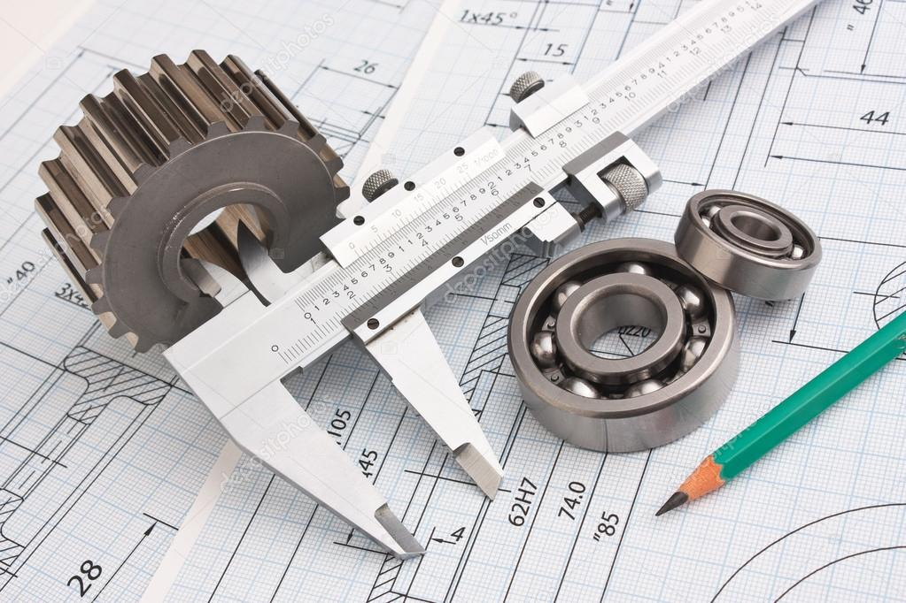

Especialidades
TÉCNICO EN ELECTRICIDAD
La carrera de Técnico en Electricidad permite al estudiante sustentar la demanda de ocupación de Técnicos Electricistas en el sector productivo y de servicios, capaz de diseñar y realizar instalaciones eléctricas residenciales y comerciales, así como proporcionar mantenimiento a máquinas eléctricas.
COMPETENCIAS PROFESIONALES

MAPA CURRICULAR

PERFIL DE EGRESO
Durante el proceso de formación de los cinco módulos, el estudiante desarrollará o reforzará las siguientes competencias profesionales, correspondientes al Técnico en Electricidad.
- Desarrolla instalaciones eléctricas residenciales y comerciales.
- Mantiene los motores y generadores de CA y CC.
- Mantiene en operación los circuitos de control electromagnético y electrónico.
- Mantiene los sistemas de iluminación y de energía renovable.
- Mantiene instalaciones eléctricas de media y baja tensión.
OPORTUNIDADES DE INSERCIÓN LABORAL.
Todas estas competencias posibilitan al egresado su incorporación al mundo laboral o desarrollar procesos productivos independientes, de acuerdo con sus intereses profesionales o las necesidades en su entorno social.

TÉCNICO EN MECÁNICA INDUSTRIAL
Profesionista que da mantenimiento a los sistemas de transmisión de potencia utilizando las máquinas herramientas convencionales, de control numérico, máquinas de soldar con arco eléctrico y oxigas auxiliándose de los procesos de ajuste de piezas mecánicas.
COMPETENCIAS PROFESIONALES

MAPA CURRICULAR

PERFIL DE EGRESO
Durante el proceso de formación de los cinco módulos, el estudiante desarrollará o reforzará las siguientes competencias profesionales, correspondientes al Técnico en Mecánica Industrial:
- Suelda y ajusta piezas mecánicas.
- Maquina piezas mecánicas en talador y torno.
- Maquina piezas mecánicas en fresadora, rectificadora y cepillo.
- Maquina piezas mecánicas por CNC.
- Mantiene sistemas de transmisión de potencia.
OPORTUNIDADES DE INSERCIÓN LABORAL.
Industrias de transformación y procesos como: Textiles, del plástico, petroleras, metalmecánica, automotriz, pesqueras, mineras, siderúrgicas, agrícolas, alimenticia, química, de muebles, forestal, papelera, gráfica y en general todo tipo de industria de la producción y manufacturera que utilice maquinaria entre otras.
TÉCNICO EN LOGISTICA
Ofrece las competencias profesionales que permiten al estudiante realizar actividades dirigidas a la administración de bienes, planificando los suministros destinados al almacenamiento de manera manual y electrónica, la organización de los nodos logísticos para el transporte de mercancías, así como proveer los servicios y atención al cliente sobre los movimientos y los costos de la cadena logística.
COMPETENCIAS PROFESIONALES

MAPA CURRICULAR

PERFIL DE EGRESO
Durante el proceso de formación de los cinco módulos, el estudiante desarrollara o reforzará las siguientes competencias profesionales:
- Supervisa el proceso de suministrio de bienes.
- Apoya el proceso de administración al servicio de almacenaje de bienes.
- Organiza el transporte de mercancías.
- Proveve servicio de atencion al cliente sbre los movimientos de logistica. Organiza los costos de la cadena logística y de las competencias de productividad y empleabilidad:
- Atencion al proceso
- Planeación y organización
- Ética profesional
- Comunicación efectiva
- Trabajo en equipo
- Atención al cliente
- Relaciones interpersonales
OPORTUNIDADES DE INSERCIÓN LABORAL
Nuestro país presenta una amplia diversidad de procesos de producción, desde los que utilizan tecnología moderna, hasta sistemas tradicionales; este hecho contribuye a diversificar las ocupaciones, los Comités interinstitucionales de Formación Profesional decidieron utilizar los siguientes: Sectores industriales, comerciales y de servicios, públicos o privados: Escuelas, constructoras, fábricas, centros comerciales, hospitales, inmobiliarias, hoteles, instituciones de crédito, despachos contables y tiendas de autoservicio. Autoempleo
TÉCNICO EN PROGRAMACIÓN
Persona con conocimientos, habilidades y actitudes, capaz de ingresar a empresas de desarrollo de software, diseño gráfico, mantenimiento, outsourcing.
COMPETENCIAS PROFESIONALES

MAPA CURRICULAR

PERFIL DE EGRESO
La formación que ofrece la carrera de Técnico en programación permite al egresado, a través de la articulación de saberes de diversos campos, realizar actividades dirigidas a la:
Instalación y desarrollo de software de aplicación utilizando programación estructurada y orientada a objetos en ambientes web y móviles, con almacenamiento persistente de datos. Así como la configuración y administración de plataforma e-learning y Comercio electrónico. OPORTUNIDADES DE INSERCIÓN LABORAL.
- Desarrolladores de software
- Analistas de sistemas
- Analista de programas de cómputo
- Programador de sistemas de cómputo
- Edición de software y edición de software integrada con la reproducción
- Escuelas de computación del sector privado
- Servicios de diseño de sistemas de cómputo y servicios relacionados
- Escuelas de computación del sector público

 2
2 4
4 15
15
 13
13